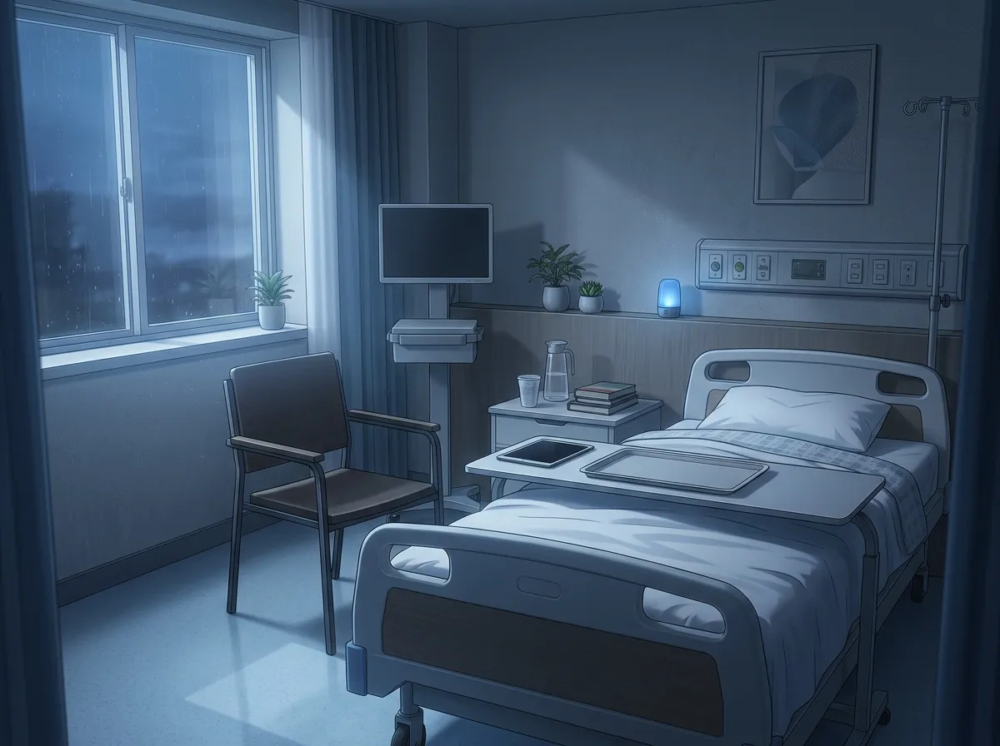
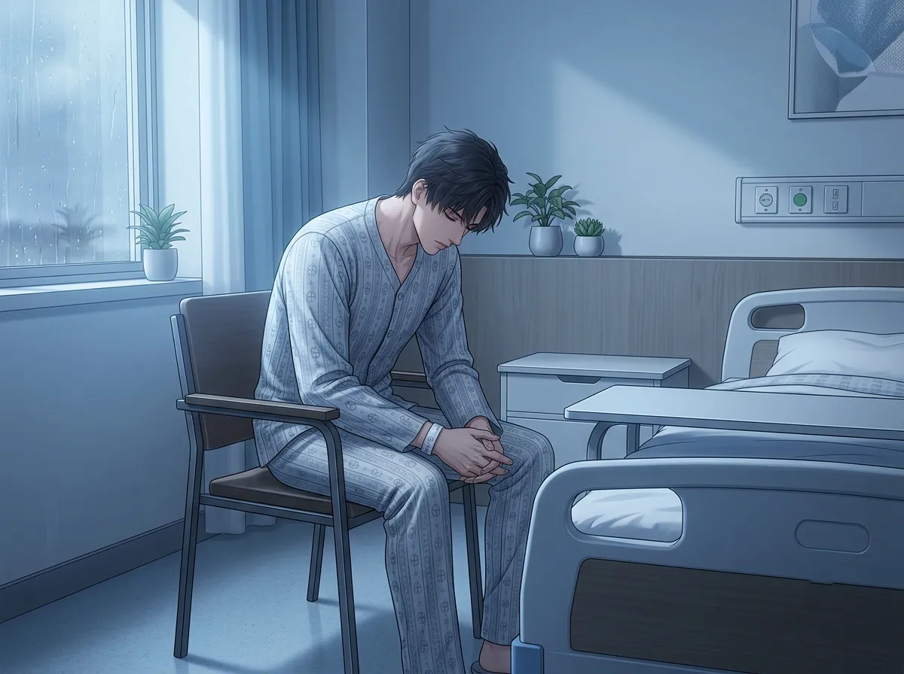
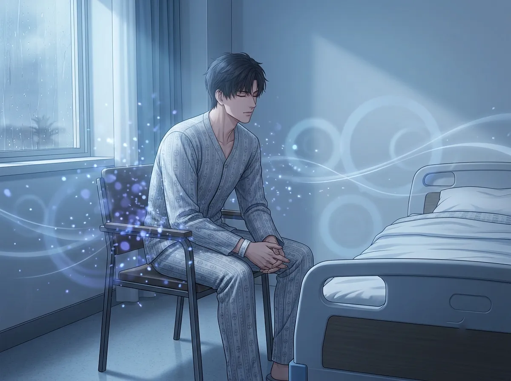
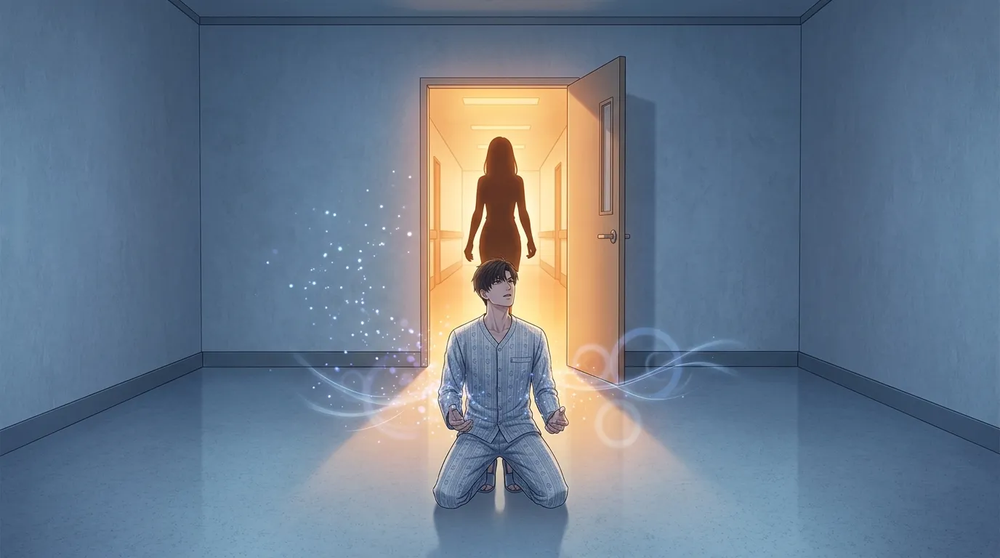
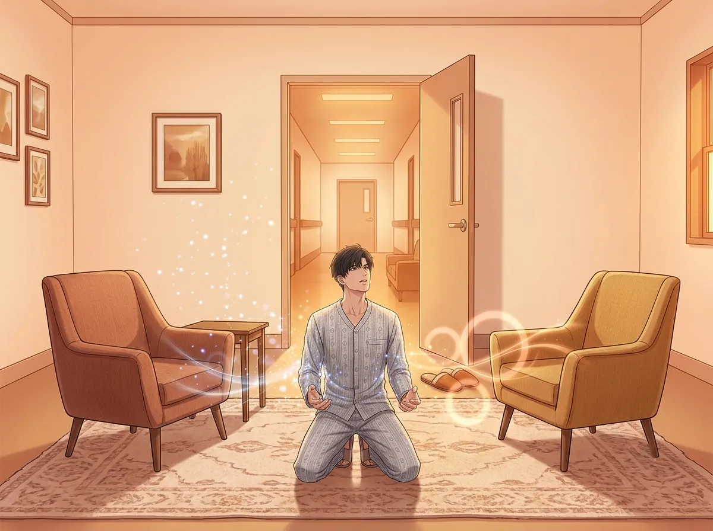

No patients. No nurses. No noise. Just him and the silence.
There is a room in the hospital. It's not used for anything.
It's small. It's white. It has one bed, one chair, one window that looks out at nothing. The sheets are folded. The machines are off. The light is dim.
It is the emptiest room in the hospital. The quietest room. The room where nothing happens.
He goes there sometimes. He doesn't know why. He doesn't tell anyone. He just goes.
He sits in the chair. He looks at the empty bed. He listens to the silence. He doesn't think about anything. He doesn't have to.
The empty room is the only place where he doesn't have to be a doctor.
This is the story of that room.

The room is empty. The bed is made. The machines are off. The silence is complete.
He walks in. He closes the door behind him. He sits in the chair. He doesn't turn on the light. He doesn't need to. The dim glow from the window is enough.
He sits there. He doesn't check his phone. He doesn't read. He doesn't do anything. He just sits.
The room expects nothing from him. The room doesn't need him to save anyone. The room doesn't need him to be strong. The room doesn't need him to be anything.
He doesn't know why he needs that. He doesn't know why he needs a room that expects nothing from him. He only knows that he does.
The empty room is the only place where he doesn't have to be a doctor. The empty room is the only place where he doesn't have to be anything.
Every other room in the hospital expects something from him. The operating room expects precision. The clinic expects answers. The waiting room expects reassurance. His office expects decisions.
The empty room expects nothing. The empty room just exists. The empty room lets him exist too.

He saves people. Every day. That is his job. That is his calling. That is the only thing he knows how to do.
He saves people. He holds lives in his hands. He makes decisions that mean the difference between life and death. He does this without hesitation. He does this without doubt.
He does this every day. And then he walks into the empty room. And he sits in the chair. And he stops saving people. For a few minutes. For as long as he can.
He doesn't tell anyone about the empty room. He doesn't tell anyone that sometimes he needs to stop saving people. He doesn't tell anyone that sometimes the weight of saving everyone is too much.
He saves people. He doesn't know how to stop. He doesn't know how to ask for help. He only knows how to walk into the empty room and sit in the chair and close his eyes and breathe.
He saves people. Every day. He doesn't know how to stop. He doesn't know how to let someone else carry the weight.
The empty room is where he puts down the weight. For a few minutes. Just for a few minutes. He puts down the weight and sits in the silence and does nothing.
He doesn't know why it helps. He doesn't know why sitting in an empty room makes the weight feel lighter. He only knows that it does.

The silence is complete. No beeping monitors. No shuffling papers. No footsteps in the hallway. No questions. No demands. No anything.
He closes his eyes. He listens to the silence. He lets it fill him. He lets it replace the noise of the day. The noise of the surgeries. The noise of the patients. The noise of the world that never stops asking him for things.
The silence doesn't ask for anything. The silence doesn't need him to be a doctor. The silence doesn't need him to be strong. The silence doesn't need him to be anything at all.
He doesn't know why the silence feels like healing. He doesn't know why the silence feels like the thing he needs most. He only knows that it does.
He spends all day surrounded by noise. Questions. Demands. Machines. Voices. The noise of a hospital that never stops.
The empty room is where the noise stops. The empty room is where the silence is. The empty room is where he learns to breathe again.
He doesn't know why silence heals him. He doesn't know why the absence of sound is the thing he needs most. He only knows that it is.

One day, she opened the door.
He was sitting in the chair. He was in the empty room. He was not doing anything. He was just sitting. Just breathing. Just existing.
She opened the door. She saw him. He saw her. Neither of them said anything.
She could have asked. She could have asked why he was there. She could have asked what he was doing. She could have asked if he was okay.
She didn't ask. She didn't say anything. She walked in. She sat on the empty bed. She looked at him. She waited.
He didn't know what to do. He didn't know what to say. He didn't know how to explain the empty room. He didn't know how to explain the silence. He didn't know how to explain why he needed a room where nothing happened.
She didn't ask. She just sat there. In the empty room. With him. In the silence.
She opened the door. She saw him. She didn't ask why. She didn't ask what he was doing. She didn't ask if he was okay. She just sat down. In the empty room. With him.
He didn't know what to do with that. He didn't know what to do with someone who saw him in the empty room and didn't ask questions. He didn't know what to do with someone who just sat down and waited.
She stayed. She didn't ask. That was the gift. That was the answer to the question he didn't know how to ask.

The room is still empty. The bed is still made. The machines are still off. The silence is still complete.
But the room is not the same.
The room is now the place where she sat on the empty bed. The room is now the place where she looked at him without asking questions. The room is now the place where he learned that he didn't have to be alone in the silence.
He still goes to the room. He still sits in the chair. He still listens to the silence. He still puts down the weight.
But now, sometimes, she comes too. She sits on the empty bed. She doesn't say anything. She just sits. In the silence. With him.
The room is not empty anymore. Not because it's full. Because it's shared.
The empty room was his. It was the only place he had. It was the only place where he didn't have to be a doctor. It was the only place where he didn't have to be anything.
She changed that. She changed the room. She changed the way he saw it. She changed the way he felt when he was in it.
The room is not his anymore. It is theirs. It is the place where he learned that silence can be shared. It is the place where he learned that he doesn't have to carry everything alone.
He still goes to the room. He still sits in the chair. But he is not the same person who used to sit there. He is someone who has been seen. Someone who has been shared. Someone who has been changed.
Zayne goes to the empty room. He goes to the room where nothing happens. He goes to the room where he doesn't have to be a doctor. He goes to the room where he can put down the weight.
He thought the room was his. He thought the room was the only place he had. He thought the room was the only place where he knew how to be.
Then she found him. She opened the door. She sat on the empty bed. She didn't ask why. She stayed.
The room is not his anymore. The room is theirs. The room is the place where he learned that he doesn't have to be alone. The room is the place where he learned that silence can be shared.
He still goes to the room. He still sits in the chair. He still listens to the silence.
But now, when the door opens, he doesn't look up. He knows it's her. He knows she came to sit with him. He knows she came to share the silence.
The room is no longer the place where he goes to disappear. It's the place where he learned how to let someone in.